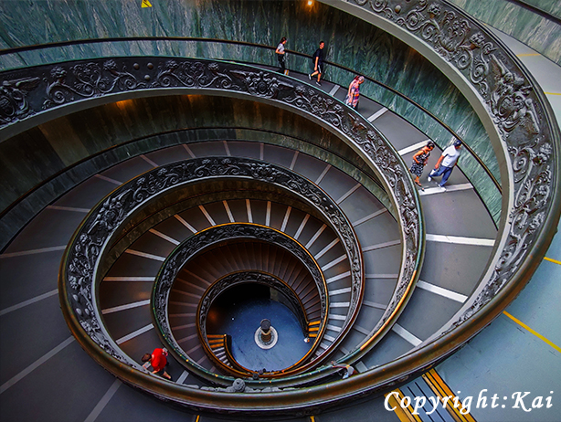

Vatican

Geographical Location: Vatican City
Vatican City, a city-state surrounded by Rome, Italy, is the spiritual and administrative focal point of the Roman Catholic Church. Home to architectural and artistic marvels, it carries a history rich with spirituality and exquisite artistry. Visitors can start their journey at the St. Peter's Square, which stands as a testament to masterful architecture and the deep-rooted history of the church.
The Vatican boasts an array of stunning sites that captivate the eye and nourish the soul. From the iconic spiral staircase in the Vatican Museums to the breath-taking paintings in the Athenian academy, the heritage it harbors is indeed immense. Even a glimpse of the city from the waterfront offers a panoramic that encapsulates the spirit and grandeur of Vatican City, presenting an ethereal view that evokes a sense of tranquility and reverence.
Photo Gallery


Mexico

.jpg)
Geographical Location: Guanajuato, Mexico
As the sun dips low in the sky, Guanajuato, the vibrant small town in Mexico, unfolds a spectacular tableau of hues and shadows that bewitch every onlooker. The historic town, celebrated as the backdrop for the acclaimed animation "Coco," transforms into a realm of dreams. Its vividly painted houses, basking in the warm golden glow of the evening sun, offer a picturesque sight that resonates deeply with the joyous and spirited theme of the beloved movie.
Guanajuato at twilight is a painting that comes to life, a perfect blend of reality and the fantastic world depicted in "Coco." The array of colors presented by the quaint houses form a harmonious canvas that radiates a tranquil yet vibrant energy as the day transitions to night. This little town, full of life and color, offers a surreal experience, inviting dreamers and artists alike to immerse themselves in its poetic scenery, alive with stories and rich cultural tapestry.
Photo Gallery


London


Geographical Location: UK
As one of the most iconic cities in the world, London carries a rich history that is matched by its continuous growth and evolution. A powerhouse of culture, politics, and finance, it stands as a city where the past and present exist harmoniously side by side. From the ancient towers that narrate tales of a regal past to modern architectural marvels that reach for the skies, London offers an unrivaled blend of history and modernity.
As one of the most iconic cities in the world, London carries a rich history that is matched by its continuous growth and evolution. A powerhouse of culture, politics, and finance, it stands as a city where the past and present exist harmoniously side by side. From the ancient towers that narrate tales of a regal past to modern architectural marvels that reach for the skies, London offers an unrivaled blend of history and modernity.
Photo Gallery


New York


Geographical Location: NYC, NY, United States, North America
New York City thrives as a vibrant tapestry of cultures, languages, and experiences. Its streets pulse with energy, reflecting the city's boundless diversity. From the rhythmic beats of street performers in Times Square to the aroma of diverse cuisines wafting through neighborhoods, NYC's lively atmosphere encapsulates a living, breathing microcosm of the world.
From the iconic skyline to the bustling streets, it's a place where dreams are both pursued and realized. The city's fast-paced lifestyle is balanced by its diverse communities, offering a unique blend of cultures, cuisines, and experiences around every corner. Amid the hustle and bustle, there's a sense of constant motion and an electrifying energy that makes life in the Big Apple truly extraordinary.
Photo Gallery


Rome


Geographical Location: Europe
Rome is one of the oldest metropolitan areas in the world. With a history dating back to 700 BC with the birth of the Roman Empire, the city has maintained its status as a cultural and historical hub of Europe. The city is peppered with ancient monuments, statues, and piazzas from different eras of history. The most famous location, the Colosseum, is touted as one of the seven modern wonders of the world. Rome houses several world famous museums, such as the Borghese and the Vatican Museum. It is also the only city in the world to encompass a recognized country, Vatican City.
Rome is also a great location for food, wine, and leisure. At the heart of Italy, Rome is a central gathering place for a diverse array of Italian cuisine; Neapolitan Pizza from the south, Tuscan wine, and truffle from the north. Rome’s most famous dish is carbonara. Beyond the food, Rome has a vibrant nightlife. The Trastevere neighborhood has plenty of bars and clubs for patrons and, just over the river, Centro’s shopping district is always bustling.
Photo Gallery


Boulder


Geographical Location: North America
Boulder, Colorado is where the Buffalo Roam. It is home to my Alma Mater, the University of Colorado! There are many hiking locations near the city center, most notably Chautauqua Park.
Boulder, Colorado is a small city of about 104,000 people, about a quarter of which are students that attend the University of Colorado. They city is a vibrant start-up hub that is a center for technology and innovation much like Ann Arbor is.
Photo Gallery